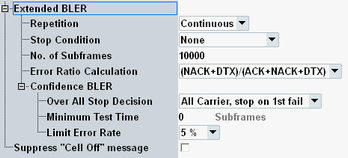

The "Extended BLER" parameters configure the scope of the measurement.
If you want to insert block errors into the downlink signal, see "Downlink MAC Error Insertion".

Defines how often the measurement is repeated.
"Continuous" | The measurement is continued until it is explicitly terminated. The results are periodically updated. |
"Single-Shot" | The measurement stops automatically, depending on the configured "Stop Condition" either when the configured "No. of Subframes" has been processed or when a confidence BLER measurement result is available. |
Selects whether a BLER measurement without stop condition or a confidence BLER measurement with early decision concept is performed.
"None" | The measurement is performed according to its "Repetition" mode and the specified "No. of Subframes". No confidence BLER result is determined. |
"Confidence Level" | A confidence BLER measurement is performed. The measurement stops when the configured "Minimum Test Time" has passed and a pass/fail decision has been made, so that a confidence BLER result (e.g. "Early Pass") is available. The "Repetition" is automatically set to "Single-Shot". Option R&S CMW-KS510/-KS512 (without CA/with CA) is required. |
For measurements without stop condition, this parameter defines the number of subframes to be processed per measurement cycle (a single-shot measurement covers one measurement cycle).
For confidence BLER measurements, this parameter specifies only the length of the throughput result trace. It does not influence the duration of the measurement.
For FDD, all scheduled and unscheduled downlink subframes are considered. For TDD, all downlink, uplink and special subframes are considered.
A scheduled downlink subframe that is sent via several downlink streams in parallel is counted as one subframe.
For examples, see "Common View Elements".
Remote command:Selects the formula to be used for calculation of the BLER from the number of ACK, NACK and DTX. PDSCH decoding errors result in NACK while PDCCH decoding errors result in DTX.
3GPP TS 36.521 specifies which formula must be used for a certain performance test or CQI test.
- BLER = (NACK + DTX) / (ACK + NACK + DTX)
- BLER = DTX / (ACK + NACK + DTX)
- BLER = NACK / (ACK + NACK + DTX)
- BLER = NACK / (ACK + NACK)
The following parameters configure parameters only relevant for confidence BLER measurements.
This setting configures the stop decision and the overall confidence BLER result calculation for measurements with carrier aggregation.
- "PCC only": A result is available for the PCC.
- "SCC<n> only": A result is available for SCC number <n>.
- "All Carrier, stop on 1st fail": Results are available for all component carriers or at least one result equals "Fail" or "Early Fail".
- "All Carrier, wait for all CCs": Results are available for all component carriers.
- "PCC only": Overall result = PCC result
- "SCC<n> only": Overall result = SCC<n> result
- "All Carrier, ...":
– If at least one result = "Early Fail": Overall result = "Early Fail" – Else, if at least one result = "Fail": Overall result = "Fail" – Else, if all results = "Early Pass": Overall result = "Early Pass" – Else: Overall result = "Pass"
Specifies the minimum test time of a confidence BLER measurement as number of processed subframes. During this time, no pass/fail decision is allowed.
Minimum test times are, for example, specified in 3GPP TS 36.521 annex G.4. They are necessary if the test conditions introduce fluctuations disturbing the statistical independence of the single bit error events (e.g. multipath fading). A minimum test time ensures that the fluctuations are averaged out.
For FDD, all scheduled and unscheduled downlink subframes are considered. For TDD, all downlink, uplink and special subframes are considered.
Remote command:Selects the limit error ratio for a confidence BLER measurement. The selection determines, for example, the used pass/fail decision rules.
The minimum test time and the error ratio calculation formula are independent of this selection, so configure also these parameters as desired.
"0.1%, 1%" | Pass/fail decision according to 3GPP TS 36.521 annex G.4 |
"5%" | Pass/fail decision according to 3GPP TS 36.521 annex G.2 |
If you press ON | OFF while the "LTE Signaling" softkey is selected and the cell signal is on, a warning can be displayed. It asks you whether you really want to switch off the cell signal.
The checkbox enables/disables the warning.
Remote command:n/a